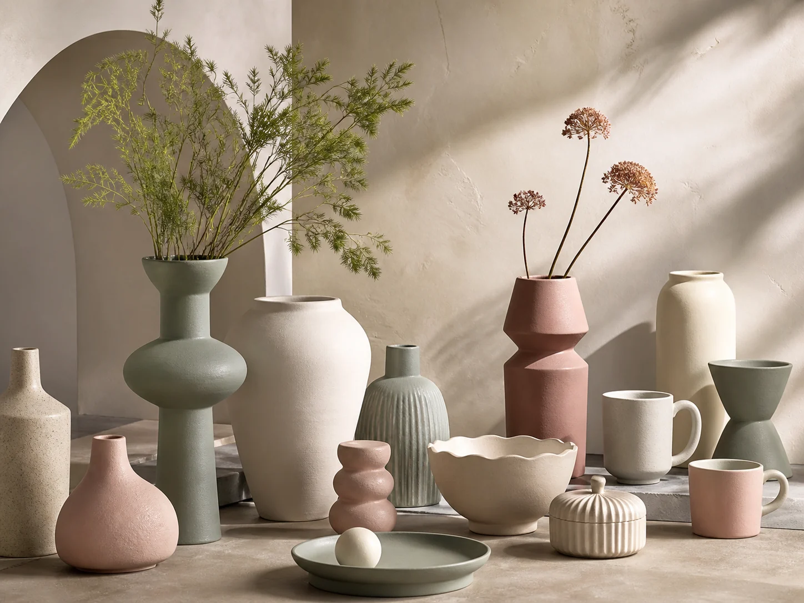

Insights for homeware buyers
Ideas, materials and
better sourcing.
Practical notes on home décor trends, ceramic production and building dependable private-label collections.

Ceramic Trends
Morandi Colors in Modern Homeware
How muted greens, warm neutrals and tactile glazes create versatile retail collections.
Read article →
Buyer Guide
What to Check Before Ordering Ceramic Tableware
A practical checklist covering material, food-contact testing, packaging and quality control.
Read article →
OEM / ODM
From Mood Board to Production Sample
A clear look at the development steps behind a custom homeware collection.
Read article →Have a sourcing question?